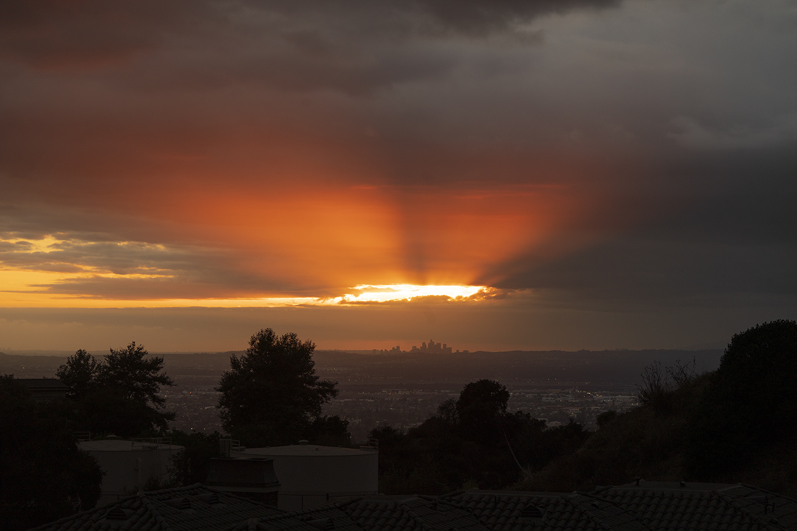
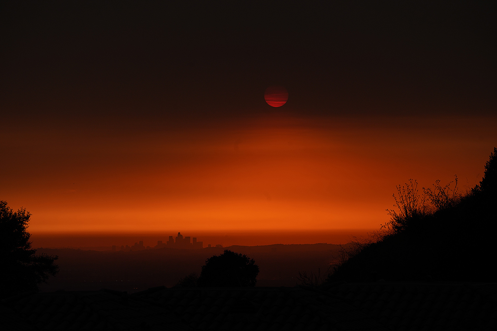
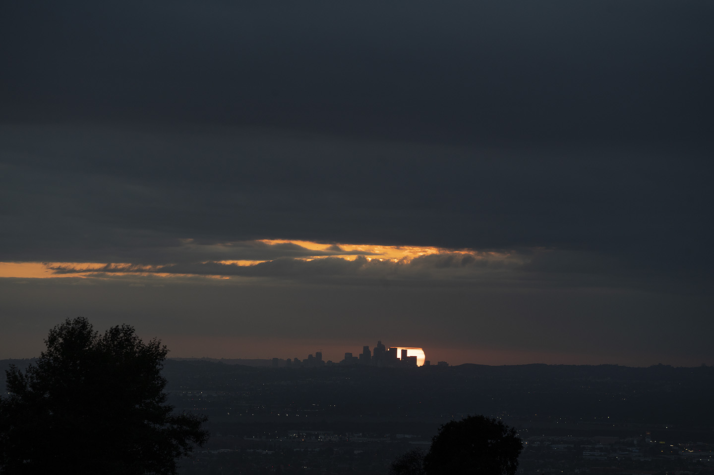
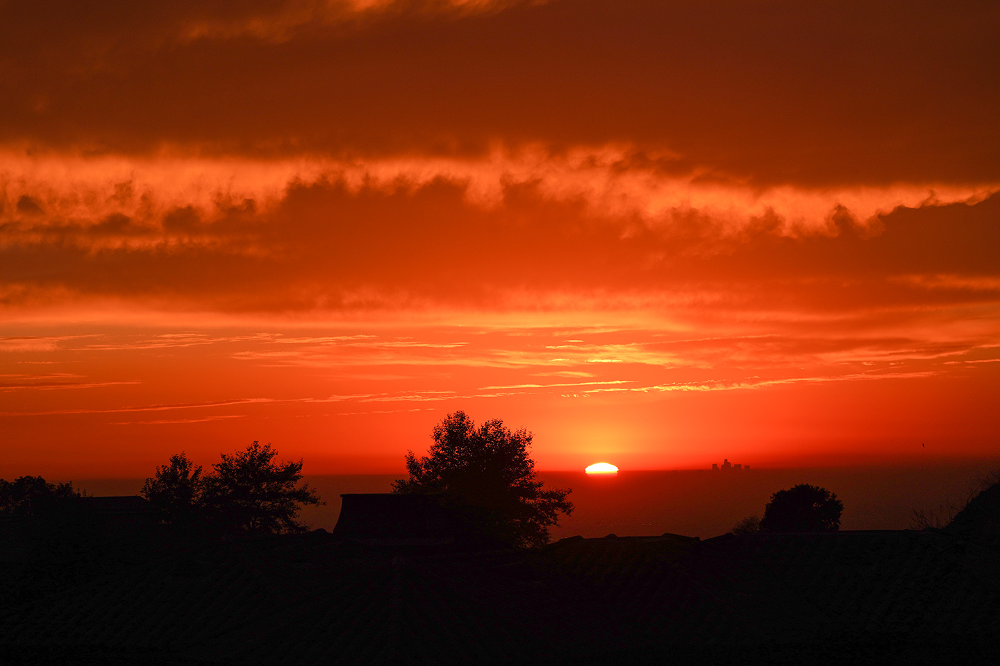

Beautiful Sunset View of LA
黄昏的日落很漂亮，但却被人赋予伤感的意味。其实相对短暂的人类历史而言，几十亿年以来，地球日复一日，周而复始的循环是大自然
亘古不变的规律，黄昏是一个白天的结束，同时也是新一天孕育的开始。无数个黄昏，我静静地看着太阳落山，心中不是孤独和落寞，而是对新的一天的向往。
洛杉矶日落非常漂亮，难怪以“日落”命名的地方很多，道路、沙滩、公园甚至酒店。有一部好莱坞老电影就叫《日落大道》，取景地也是在比佛利山那边的日落大道。

The city in the distance is Los Angels downtown, LA is a mega city with a tiny downtown, like the
most city in the US. 云层后面的太阳从云层缝隙透出万道光芒，映红了整个天际。

Summer is the most dangerous season for wildfire, while the people of LA were suffering the wildfire
they saw the beautiful scene brought by the smoke of wildfire. 山火带来的烟雾遮住了太阳。傍晚时分，烟雾中隐隐透出来的太阳，
没有了强烈的光线，我们终于可以直视了。如果没有山火，这景象在世界末日来临前，大概看不到。

暴雨后开始放晴，漫天的乌云开始出现裂缝，黄昏的落日从天边透出缕缕红光。在快要沉入天际线前，露了大半个脸。
